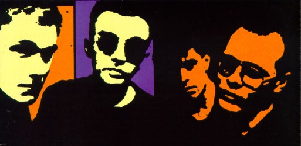

 |
kitoks pasaulis |
Kitoks pasaulis, kurį kaip dvigubą plokštelę 1992 m. išleido Bomba, buvo ankstyvųjų Foje įrašų rinkinys, papildytas naujai įrašytomis senomis dainomis. Tai buvo pirmasis atsikūrusios ankstyvosios grupės sudėties albumas.
Vinilinių plokštelių pusės buvo sunumeruotos K, L, M, N, ant kiekvienos jų buvo po Foje nario nuotrauką, „iškirpta“ iš viršelio fotografijos (iš eilės – Andrius Mamontovas, Arnoldas Lukošius, Algimantas Kirščiūnas, Darius Burokas).
Albumo daina „Aš ją labai...“, išleista tik vinilinėje plokštelėje, yra vienintelė ne Mamontovo sukurta Foje daina. Nors tai tėra kelių posmelių trukmės pokštas, „Aš ją labai...“ buvo įtraukta į prieš paskutiniuosius Foje koncertus laikraščiuose platinta anketą, kurią atsiųsdami fanai galėjo balsuoti už koncertuose skambėsiančius kūrinius.
garso režisieriai broliai Motiejūnai (Vilniaus plokštelių įrašų studija), Raimondas Trilikauskis (M-1 įrašų studija)
-
Pirma pusė
- Kitoks pasaulis
- Liūdesys
- Krantas
- Sparnai
- Mėnulio veidas
- Kibernetiniai žaislai
- Vaikystės stogas
- Aš ją labai...
- Tu žmogus
- Tu nieko dar nepažinai
- Laužo šviesa
- Keistuolis
- Distancija
- Aš noriu būti laisvas
- Sukasi aplink
- O, mano saule
- Saugok vaikystę
- Žvakių šviesoje
- Tiktai muzika
Antra pusė
Trečia pusė
Ketvirta pusė
3,5,12,14 tik LP ir MC
8 tik LP
- Andrius Mamontovas – vokalas, gitara, akustinė gitara, pianinas, mušamieji
- Arnoldas Lukošius – klavišiniai, elektroniniai vargonėliai, akordeonas, vokalas
- Algimantas Kriščiūnas – mušamieji, ritmo programos, vokalas
- Darius Burokas – bosinė gitara, klavišiniai,
- Darius Tarasevičius – bosinė gitara
- Eugenijus Pugačiukas – mušamieji, ritmo programos
- Saulius Valikonis – saksofonas
- Romas Rainys – gitara
- Gediminas Simniškis – bosinė gitara
- Robertas Meržvinskas – saksofonas
- Jaunius Beinortas – gitara
- Gintas Baltrukaitis – ritmo programos
KITOKS PASAULIS
žiūri aplink stebiesi viskuo
daiktus matai savo šviesoj
o jeigu viskas yra ne taip
ir tu pasaulį regi atvirkščiai
galbūt ne garsas skamba tyloj
o tyla garse
ka apie tylą žinome mes
galbūt ne šviesos žiba tamsoj
o tamsa jose
kiek dar nedaug suprantame mes
žiuri aplink viskas tvarkoj
o ar žinai kas bus rytoj
o jei pasaulis apsivers
kitom akim žiūrėt privers
tu pabandyk pasižiūrėt
gal kiek netaip gal kiek kitaip
tikiu paprasti daiktai apsivers
ką nors neregėto ir naujo atvers
LIŪDESYS
žodžių daug įvairių išgalvojame mes
kad netektų mastyt ir liūdėt
visi norime būt maloniais ir džiugiais
nekaltais ir linksmais būtinai
tik kam visa tai
tu liūdėt nebijok
tu liūdėt nebijok
nebijok liūdėt
nes tiktai liūdesy
nes tiktai liūdesy
sielos džiaugsmas
iš tų žodžių skambių
ir juokingai kvailų
mes sustatome daug sakinių
galim juoktis ilgai
nekaltai ir linksmai
kol pasibaigia tie sakiniai
tik kam visa tai
argi gali įvertinti šviesą tasai
kas nematė tikrosios tamsos
nenuvertinkim liūdesio nes tik jisai
mums parodo kas tai džiaugsmai
KRANTAS
pučia pučia jūrų vėjas
neša neša mano laivą
mano viltį neša neša
supa supa juodos bangos
glosto mažą mano laivą
blaško blaško mano sapną
kur pasisuksi naktis
apgaubia tavo akis
apgaubia tavo viltis širdy
tu jos klasta netikėk
tikslą kaip žvaigždę turėk
baigsis audra ir nušvis tavo veidas
lekia lekia mano laivas
skuba skuba ten kur krantas
ten kur baigias juodos bangos
skuba skuba ten kur smėlis
ten kur žmonės ten kur gėlės
ten kur saulė žemę šildo
galbūt nera mano kranto
tiktai vėjas juodos bangos
galbūt krantas mano sapnas
kas tik būtų atiduosiu
visą jėgą savo laivui
ir pasieksiu savo krantą
pučia pučia jūrų vėjas neša neša
mano laivą
SPARNAI
autostradų juostos ir namai
iš akių išnyko
miesto dulkės ir žmonių veidai
apačioj paliko
o aplink lyg pasakų kalnai
debesų balčiausi patalai
nors aš sparnų neturiu
į viršų skrendu
nors aš ne paukštis esu
padangę siekiu
mintys svajonės sapnai
tai mano sparnai
keliantys aukštyn mane sparnai
kaip Ikaras saulėn aš lekiu
nebijau sudegti
prieš akis be galo daug žvaigždžių
kaip į jas patekti
kiek aplink erdvės ir kiek šviesos
kas man žemėj visą tai atstos
kai supuosi svajose aukštai
lyg ant laivo denio
kai aplink vien debesų pūkai
mano mintys žemėj
noriu padaryti ją tokia
kokia ji man regisi sapne
MĖNULIO VEIDAS
kam tyrą sapno tylą
tu iš nakties keli
gal tame paguoda yra
juk vienas gyveni
pasaulį tu parodai
ir be ryškių spalvų
taip jis kitoks atrodo
jį tokį aš myliu
geltonas ir šaltas
raudonas ir baltas
tu saulę atstoji
šešėlius pakloji
kai laivas pasiklydęs
supas jūros bangose
jį tamsoje išvydęs
rodai kelia naktyje
man jauną širdį skauda
ir apninka neviltis
kai tavo liūdną veidą
dengia debesys juodi
KIBERNETINIAI ŽAISLAI
mes žinom medžiagas formas daiktų
mes žinom kas yra gera ir bloga
mes žinom kaip metai keičia metus
ir kaip nuo žaibo apsaugoti stogą
tiktai nežinome
kas tai lietus
kas tai žvaigždės
gėlės dangus
nes nuo vaikystės mums bruko žaislus
kibernetinius ir negyvus
metalinius šaltus ir kietus
(nemielus)
mes galim kelią nutiest į žvaigždes
mes galim kalnus patraukti į šoną
mes galim greit sustabdyti upes
ir padaryti iš juodo geltoną
mes nusikėlėm per laiką pirmyn
mėnulio pievas užsėjom aguonom
mes darom pieną iš jūros vandens
ir iš medienos padarome duoną
VAIKYSTĖS STOGAS
tą vakarą tamsų
aš ant stogo lipau
norėjau išvysti
ką seniai užmiršau
norėjau pajusti
svaigų orą dangaus
nuo jo užsimerkt
ir saves paklaust
klausyk žmogau
klausyk nenusisuk
ko ieškai čia
vaikystė baigės juk
dar būdamas vaikas
aš užlipdavau čia
ir kojas nukaręs
svajojau nakčia
džiaugiaus kad esu
tai arti prie dangaus
kad ranką prie čerpių
galiu priglaust
tą vakarą tamsų
aš ant stogo lipau
norėjau išvysti
ką seniai užmiršau
džiaugiaus kad esu
vėl čionai
vaikystė sugrįžo
lyg seni sapnai
AŠ JĄ LABAI...
aš ją labai mylėjau karštai
bet pabučiuot negalėjau visai
ji man pasakė tu pankas esi
ir pabučiuoti manęs negali
aš ją labai mylėjau
bet pabučiuot negalėjau
ji man pasakė tu pankas esi
ir pabučiuoti manęs negali
aš daug verkiau, gėriau rūkiau
kol pagaliau kas yra supratau
ir nuo tada dieną naktį su ja
tra lia lia lia lia
lia lia lia lia lia
...su ja
TU ŽMOGUS
dar vakar buvai tu akmuo
dar vakar buvai tu vanduo
dar vakar buvai tu žolė
tol kol nesprogo lemtinga žvaigždė
tai vis dar tu ir tu vis dar esi žmogus
pažiurėk į save
tavo vardas vis dar žmogaus
veidrody tu
tavo bruožai vis dar žmogaus
pažiūrėk į save
juk tu vis dar esi žmogus
dar vakar buvai tu akmuo
dar vakar buvai tu vanduo
tu iš nieko tapai viskuo
kodėl gi tu taip darai kad vėl
pavirstum į nieka
TU NIEKO DAR NEPAŽINAI
tu nieko dar nepažinai
net vėjo lakstančio laukuos
tu net nebandei išgirst jo kalbos
jam ranką ištiesk jis tave sušukuos
tu nieko dar nepažinai
net paukščio skrendančio aukštai
kiek kartų su juo kilai link šviesos
jam žodį ištark jis tau uždainuos
juk nori pakilti kaip vėjas
kaip aitvaras nutrūkęs
tereikia nutraukti tą skausmą
lyg rišantį siūlą
tu nieko dar nepažinai
tik melą slepiamą veiduos
tau nuolat kartojo kad viskas gerai
kas prarastą laiką ir erdvę atstos
tu nieko dar nepažinai
tu neturėjai šilumos
gal nieko dar nesutikai
kas nors bent kiek turėtų jos
LAUŽO ŠVIESA
laužo šviesa naktyje
guodžia gaivina mane
nerimas stingsta veide
kas ten toli tamsoje
laužas prieš mano akis
dega karštai lyg širdis
laukiu prie laužo šviesos
gal kas atklys iš tamsos
deg šviesk ir neužgesk
šildyk rankas
glostyk akis
atmerktas
būk vienintelė viltis
nors ir mano paties
uždegta
naktyje
gal kas prie laužo sustos
gal pasiilgs šilumos
tam kas klajoja nakty
laužo šviesa bus viltis
žvaigždės pakilo aukštai
šaukia jas paukščių takai
laužas žvaigždes man atstos
šviesą ir šilumą duos
laužas ilgai dar liepsnos
kas man jo šviesą atstos
net visagalė naktis
laužo užpūst neišdrįs
KEISTUOLIS
kai tu eini tolyn gatve šurmuly
neišsiskirti minioje negali
truputi gal esi ne toks kaip kiti
ir ne kiekvienas gal supras kuo tiki
užkrėsk keistumu užkrėsk naujumu
užkrėsk mes širdy taip trokštam būt
truputi keisti
gal tu verki gal tu juokies savyje
tik nieks negirdi nieks neklauso taves
stebiu tave ir gyvenu mintimi
kur tu randi jėgos išlikt savimi
atverki tai kas pas tave mintyse
juk aš matau kaip žodžiai smaugia tave
galbūt visi kas nesiskaito keisti
susimastys kodėl gi jie paprasti
DISTANCIJA
jaučiuosi kaip sulėtintam kine
skubu bet viskas plaukia pro mane
ir horizontas tolyje blankus
ilgai dar bėgsiu kol šalia jis bus
kažkur tamsoj kažin kokioj erdvėj
distancija kurią turiu įveikt
ir laikas lekia nuolatos greta
jis nugalėti nori bėgime
visi mes trokštam pagaut laimės paukštę
ir skubam kažkur visada
bet galbūt tai ir yra tikras džiaugsmas
gyvent nuolatos kovoje
per dieną nesustoju ir pernakt
juk aš nuo nemigos baigiu apakt
o ta žolė kur auga pakelėj
taip sunkų kūną traukia pailsėt
tegul beribis nuovargis apims
ir viltį ir tikėjimą atims
sustot nenoriu pradedu suprast
neverta laiko aplenkto prarast
AŠ NORIU BŪTI LAISVAS
aš gimsiu rytoj
mes gimsim rytoj
kai kelią nušvies
skaisti pilnatis
mes gimsim rytoj
mes gimsim tada
kai liesis daina
kai jos nieks nedrįs
uždraust ir užgniaužt
kai baigsis naktis
tai būsim ne mes
tai būsiu ne aš
mes mirštam kančioj
bet gimsim rytoj
dar nėra minties
kurios nestabdys
dar nėra rimties
kurios neprivys
mes gimsim rytoj
aš noriu būt laisvas
mes gimsim tada
kai gėlės žydės
kai niekas nevers
nekęst ir žudyt
mes gimsim tada
aš noriu būt laisvas
SUKASI APLINK
sukasi aplinkui viskas užburtu ratu
tūkstančiai akių ir tūkstančiai veidų kartu
bet nemoka akys tos ir veidai
verkt skausmingai nusijuokt smagiai
aš labai norėčiau kaukę nuo akių nuimt
nuoširdžiai norėčiau nuoširdžius žodžius priimt
kur tie žodžiai kur ta saulė tyra
nagirdžiu jų bet tikiu jie yra
ne nesijuok jeigu norisi verkt
kartais man atrodo žodžiai lyg tušti garsai
jie kaip lietui lyjant skambantys šalti lašai
kaip suprasti kur tų žodžių tiesa
kas parodys tai ko niekur nėra
tad kodėl gi tylim mes dabar visi kartu
jis ir jie ir jos ir jūs ir aš ir tu
gal nemokam kaukių nusiimt
gal nebegalim saves prisimint
O MANO SAULE
tu ateini debesų kilimais
tu gyveni ten kur paukščių takai
tu negali nesijuokt su vaikais
kur tu eini žydi gėlės laukais
o mano saule tu mano šviesa
tu žemę sušildai ir sklaidos tamsa
tada kai nuskaidrins
padangę aušra
o mano saule
ateik su diena
būk visada mėlynam danguje
man neramu kai taves ten nėra
SAUGOK VAIKYSTĘ
visos svajonės lieka kažkur praeity
vaikiškos mintys skęsta gilioj užmaršty
kam atsisakom to kuo maži tikėjom
nešiojom ir slėpėm širdy
kas man į visą tai atsakys
norime būti suaugę solidūs rimti
tikimės tapti būtent tokie ateity
metame viską ir imamės to
kas mums vaikystės svajų neatstos
esam šiandien negalvodami kas bus rytoj
aš tikiu kad viskas bus gerai
kad mes gyvensim ilgai
laimingai ir gražiai
aš taip noriu žinot
ka jūs galvojat apie tai
sakau būkim vaikai
svajokime kaip vaikai
tikrąją laimę norim visi surast
ieškome blaškomės bandom kažką suprast
bet prisiminkim kai buvom vaikai
laimingi buvome tikrai
galbūt todėl kad tos laimės reikėjo mažai
laikas nelaukia laiką nuneš ateitis
vaiko svajonės mano šventa viltis
noriu tikėt kad tais laikais kurie atūž
kurie ateis
liksime mes nors truputi vaikais
aš tikiu kad viskas bus gerai
ŽVAKIŲ ŠVIESOJE
aš pasiklydau tarp veidų
keistai dažytų svetimų
o byrantis smėlis delnuose
ar tai dekoracija ar ne
kodėl popieriniai žiedai tikresni
už tikrus
kodėl nupaišyti veidai gyvesni
už gyvus
tiktai žvakių šviesoje
savo veidą aš randu
kaip uždegti tas šviesas
kurios degtu visada
aš savo paslaptį turiu
aš pasislėpęs tarp žmonių
juk jei atsiversiu kaip lietus
kitų akyse vistiek tai kaukė bus
mėnulio virpančioj šviesoj
aš jūros ilgesį girdžiu
beribė erdvė mažam kambary
viliojantys toliai paties sukurti
TIKTAI MUZIKA
vieną gražų ankstyvą rytą pabudau
ir ilgai žiūrėjau į sieną
kal pro miglą pamačiau
laikrodį kabantį ten
jis kažkaip keistai tiksėjo
ne į ritmą vis tiksėjo
kas gi jam atsitiko
išėjau ieškoti atsakymo
o tiktai muzika
stabdo laiką keičia žodį
o tiktai muzika
tiktai muzika viena
užlipau ant aukšto stataus stogo
ten buvo daug daug daug kaminų ir antenų
aš vaikščiojau tarp jų kaip miške
tamsiam miške
bet atsakymo ten nebuvo
vienas geras barzdotas dėdė man pasakė berniuk
aš žinau kodėl stovi laikrodis
viskas labai paprasta
tu per stipriai prisukai spyruoklę
ir rodyklės naktį išskrido pro langą